PracticaAmpliacion
El objetivo de esta práctica es configurar un servidor Nginx que utilice hosts virtuales para alojar múltiples sitios web en un solo servidor y que cada host virtual apunte al directorio public_html de distintos usuarios del sistema operativo Debian. De esta manera, cada usuario podrá gestionar su propio sitio web desde su carpeta personal.
Instalación de Nginx
Para poder hacer esto necesitamos instalar Nginx. Si no está instalado, los pasos para hacerlo son:
-
Actualizamos el sistema con este comando:
bash sudo apt update && sudo apt upgrade -y -
Instalamos Nginx con este comando:
bash sudo apt install nginx -y -
Verificamos si está activo con este comando:
bash sudo systemctl status nginxDebería de salir esto si está funcionando:

- Si no está activo, lo activamos con este comando:
bash sudo systemctl start nginx
Una vez hecho esto, Nginx debería estar funcionando correctamente, por lo que ya podremos empezar con la creación de los usuarios.
Creación de Usuarios
Para la creación de los usuarios, en este caso dos de ellos, tendremos que usar los siguientes comandos:
sudo adduser usuario1
sudo adduser usuario2
Una vez que hagamos esto, nos pedirá que le asociemos una contraseña a cada usuario nuevo que creemos. Además de la contraseña, también se le asociarán más datos que para esta práctica se pueden dejar en blanco, como número de teléfono...
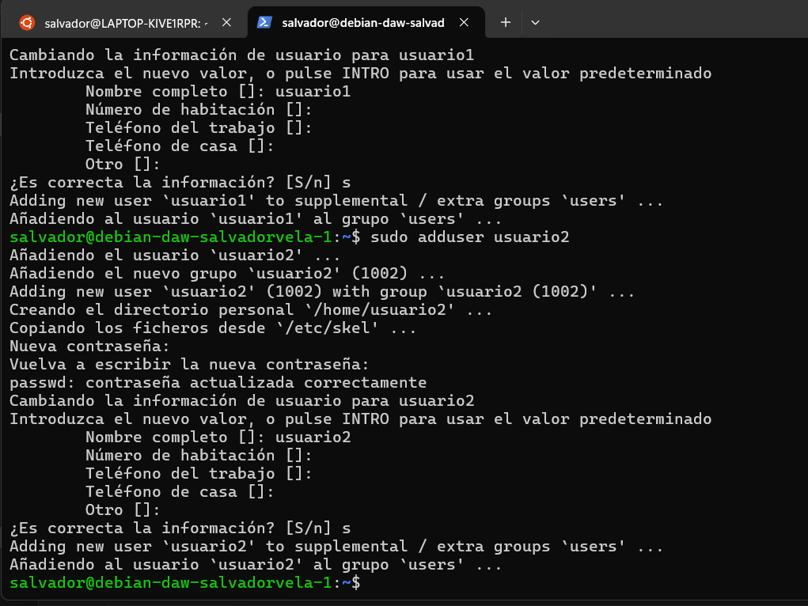
Creación de Directorios public_html
Después de esto, procedemos a crear las carpetas public_html en cada usuario. Para esto usaremos estos comandos:
sudo mkdir /home/usuario1/public_html
sudo mkdir /home/usuario2/public_html
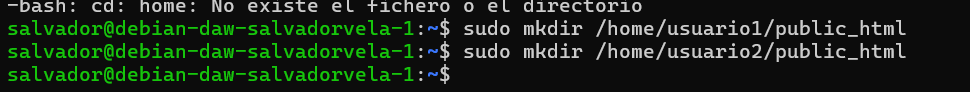
Una vez hecho esto, le damos los permisos correspondientes. Para hacer esto usamos estos comandos:
sudo chmod 755 /home/usuario1/public_html
sudo chmod 755 /home/usuario2/public_html
Después, le cambiamos la propiedad de los directorios a sus respectivos usuarios con estos comandos:
sudo chown -R www-data:www-data /home/usuario1/public_html
sudo chown -R www-data:www-data /home/usuario2/public_html
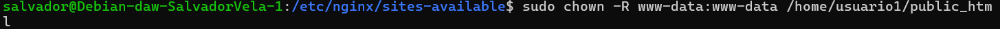
Creación del Contenido Web
Ahora que ya hemos dado los permisos, ya podemos empezar con la creación del contenido web.
Para esto necesitamos crear en cada carpeta public_html de cada usuario un archivo index.html con un contenido para que se muestre.
Podemos usar este como ejemplo para el usuario1:
<!DOCTYPE html>
<html>
<head>
<title>Usuario 1</title>
</head>
<body>
<h1>Bienvenido al sitio de Usuario 1</h1>
</body>
</html>
Para el usuario2 podemos usar el mismo pero cambiándole el 1 por el 2.
Para hacer esto, crearemos los index.html y le añadiremos el contenido de ejemplo con:
sudo nano /home/usuario1/public_html/index.html
sudo nano /home/usuario2/public_html/index.html
y le introducimos el HTML.
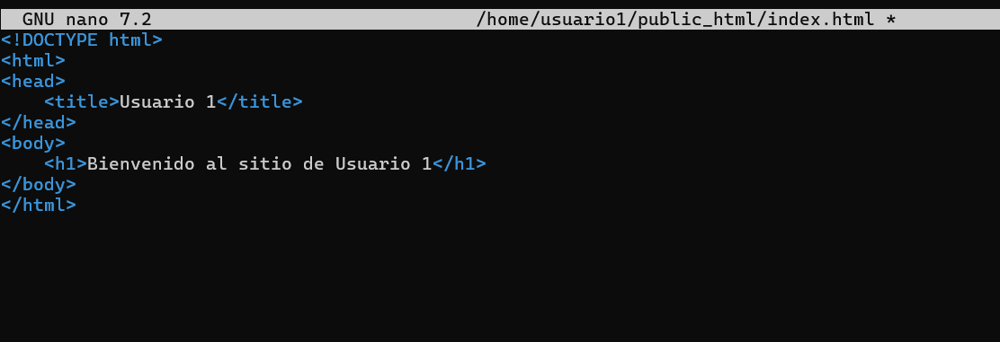
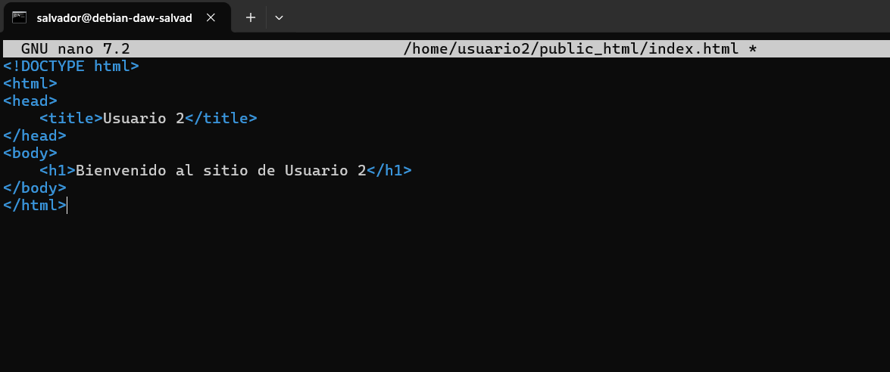
Configuración de Nginx
Una vez tenemos esto, ya podemos empezar con la configuración de Nginx.
Para empezar, nos vamos a dirigir a /etc/nginx/sites-available/ y crearemos los archivos de configuración para cada usuario.
Como tenemos que hacer uno para cada usuario, voy a llamarlos usuario1conf y usuario2conf.
Estos los crearemos usando nano, su contenido será este:
server {
listen 80;
server_name usuario1.local;
root /home/usuario1/public_html;
index index.html;
location / {
try_files $uri $uri/ =404;
}
}
En el se indica el puerto y la ruta que se deberá de cambiar para el usuario 2.
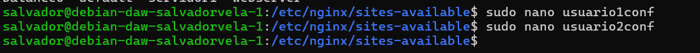
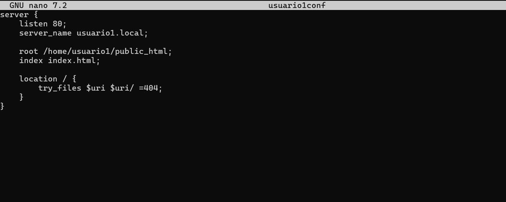
Ahora necesitamos habilitar los sitios web. Para ello necesitamos crear un enlace simbólico para cada uno en /etc/nginx/sites-enabled/.
Los crearemos con estos comandos:
sudo ln -s /etc/nginx/sites-available/usuario1conf /etc/nginx/sites-enabled/
sudo ln -s /etc/nginx/sites-available/usuario2conf /etc/nginx/sites-enabled/
Una vez hecho esto, al meternos en sites-enabled debería verse así:
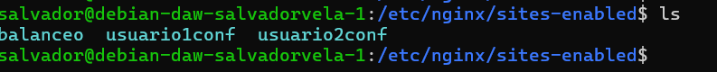
Debe salir del mismo color que se muestra en la foto. Si no aparece de la misma forma, es porque ha habido algún error.
Una vez hecho esto, ponemos el siguiente comando para ver si tenemos algún error:
sudo nginx -t
Y si todo sale bien, ponemos:
sudo systemctl reload nginx
para reiniciar Nginx.
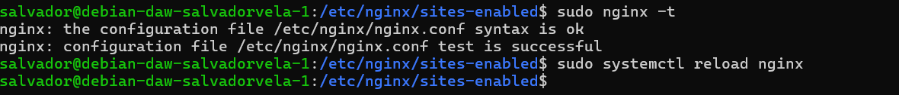
Configuración del Archivo hosts
Una vez hecho esto, tenemos que abrir el archivo hosts de nuestra máquina física y poner lo siguiente:
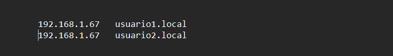
Para que funcione, deberéis de poner la IP de vuestra máquina virtual y el nombre del dominio que habéis puesto en los archivos de configuración:
http://usuario1.local
http://usuario2.local
Una vez hecho esto, al acceder a las URL debería de aparecer el contenido de los HTML de prueba que metimos en el directorio de public_html.
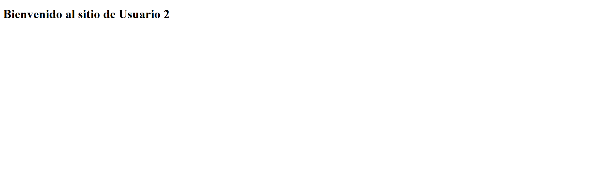
Configuración HTTPS
Ahora, para terminar, lo que necesitamos es añadir la configuración HTTPS. Para ello, primero debemos generar los certificados SSL autofirmados para cada dominio:
sudo openssl req -x509 -nodes -days 365 -newkey rsa:2048 -keyout /etc/ssl/private/usuario1.key -out /etc/ssl/certs/usuario1.crt
sudo openssl req -x509 -nodes -days 365 -newkey rsa:2048 -keyout /etc/ssl/private/usuario2.key -out /etc/ssl/certs/usuario2.crt
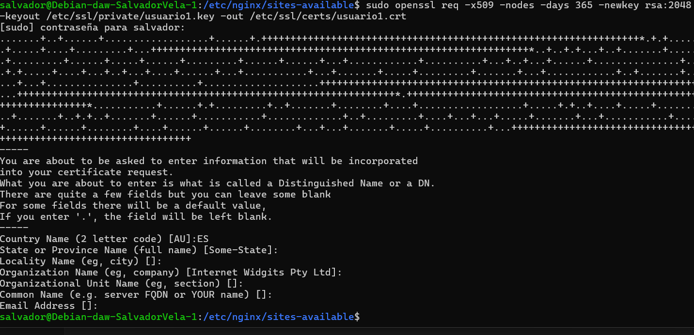
El siguiente paso es modificar los archivos de configuración para que incluya el HTTPS.
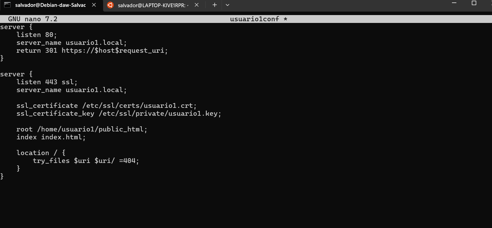
Después de modificar los archivos, volvemos a reiniciar Nginx con:
sudo systemctl reload nginx
y ya debería de aparecer el certificado.
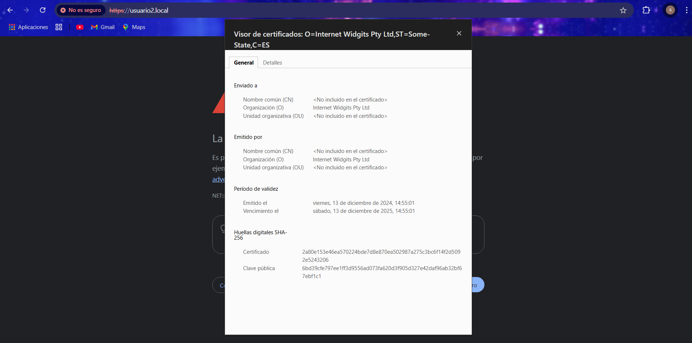